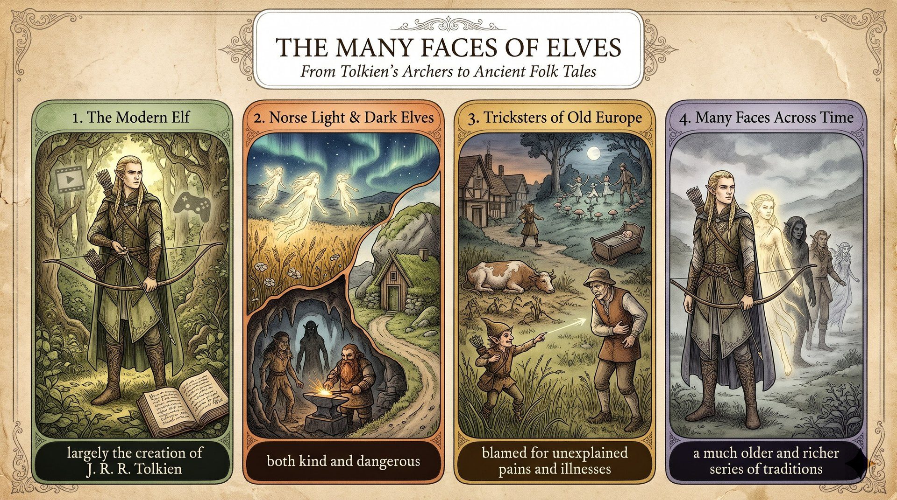

去年暑假全家去冰島，我發現精靈不只是奇幻電影的創作。
not just a creation of fantasy movies公車因道路繞過巨石而減速，導遊說這條路改道是為了不打擾住在裡面的「隱藏的人們」。
redirected to avoid disturbing the hidden people我一開始把他們和《魔戒》的精靈搞混；導遊說北歐精靈有好有壞，古英格蘭人把刺痛怪給精靈箭；晚上我又讀到殘忍的凱爾特精靈。
I mixed up these hidden people with ...我的書架上放著那趟旅行帶回的小石頭，提醒我熟悉的故事背後都有更古老的歷史。
on my bedroom shelf sits a small stonemy family (S) + took (V) + a trip (O)；後半 I (S) + learned (V) + that ... (O)。
not just A：不只是 A。
take a trip to + 地方：去某地旅行；a creation of N：……的創作；fantasy movies：奇幻電影。
Last summer, my family took a trip to Iceland,（時間＋主句一）and I learned that（主句二）elves are not just a creation of fantasy movies.（名詞子句）語塊 1（去年暑假，我們全家去冰島旅行）➔ 語塊 2（我才知道）➔ 語塊 3（精靈不只是奇幻電影的創作）
這是記敘文開頭，從時間 Last summer 開始順著翻。
and：前面是事件「去冰島」，後面是結果「我才知道」，and 連接兩個完整主句。that：左邊是 learned，右邊 elves are not just ... 是完整句 ➔ 名詞子句。not just A (but also B)：不只是 A（還是 B）。our bus (S) + slowed down (V)；because 子句 the road (S) + curved (V)。
slow down：減速；curve around：繞著……轉彎；suddenly：突然。
On our second day,（時間）our bus suddenly slowed down（主句）because the road curved around a huge rock.（because 原因子句）語塊 1（第二天）➔ 語塊 2（我們的遊覽車突然減速）➔ 語塊 3（因為道路【繞著一塊巨大的岩石】轉彎）
這句先說事件再說原因，中文照順序翻。
because：右邊 the road curved around a huge rock 是完整句 ➔ because 是連接詞。如果後面只有名詞，就要用 because of：because of a huge rock。slow down／speed up：減速／加速。Our guide (S) + explained (V) + that ... (O)；名詞子句 the road (S) + had been redirected (V)。
who might live inside 主格關代子句修飾 the hidden people。
redirect：改道；avoid + V-ing；disturb：打擾。
Our guide explained that（主句）the road had been redirected（名詞子句（過去完成被動））to avoid disturbing the “hidden people”（不定詞（目的））who might live inside.（主格關代子句）語塊 1（導遊解釋說）➔ 語塊 2 主詞（這條路）➔ 語塊 3 超車（是為了避免打擾）➔ 語塊 4 超車（可能住在石頭裡的）＋「隱藏的人們」➔「才改道的」
這句是轉述導遊的話，先翻「導遊解釋說」，再整理子句。
that：左邊是 explained，右邊是完整句 ➔ 名詞子句。who：左邊是名詞 the “hidden people”；右邊 might live inside 缺主詞 ➔ 主格關代，指人用 who。had been redirected。記敘文轉述別人說的話，比轉述動作更早的事用過去完成式。
to avoid disturbing rocks where elves might live ➔ 本句 the hidden people who might live inside。I (S) + mixed up (V) + these hidden people (O) + with the elegant elves。
from The Lord of the Rings 修飾 the elegant elves。
mix up A with B：把 A 和 B 搞混；At first：起初（暗示後來改觀）。
At first,（時間副詞）I mixed up these hidden people（主幹（mix up A））with the elegant elves from The Lord of the Rings.（with B＋來源）語塊 1（一開始）➔ 語塊 2（我把這些「隱藏的人們」）➔ 語塊 3 超車（和《魔戒》裡的優雅精靈）➔「搞混了」
這句很短，從 At first 開始翻。
mix up A with B。these hidden people、B＝the elegant elves from The Lord of the Rings。中文要用「把 A 和 B 搞混」，動詞放最後。At first 一出現，讀者就預期「後來」會改觀，是記敘文製造轉折的信號。不要寫成 At the first。
At first（起初，後來改變）vs. First（第一，列舉步驟）。the guide (S) + told (V) + us (O) + that ... (O)；名詞子句是 some elves blessed ..., while others brought ...。
some ... while others ... 對比。
tell sb that ...；bless A with B；rich crops：豐碩的收成。
However, the guide told us that（轉折＋主句）in Norse mythology,（範圍）some elves blessed farmers with rich crops,（some 子句（bless A with B））while others brought illness.（while 對比子句）語塊 1（不過導遊告訴我們）➔ 語塊 2（在北歐神話中）➔ 語塊 3（有些精靈會賜給農民豐收）➔ 語塊 4（有些則會帶來疾病）
這句是轉述導遊的話，先翻「不過導遊告訴我們」。
However：它是轉折副詞，後面要逗號，前面要句號，不能拿來連接兩個句子（✗ I was confused, however the guide ...）。that：左邊是 told us，右邊是完整句 ➔ 名詞子句。some ... while others：子句裡又是一好一壞的對照。整句就像俄羅斯娃娃：However 包 told us，told us 包 that 子句，that 子句裡再分兩半。
However（副詞）vs. but（連接詞）：It was cold. However, we went out.／It was cold, but we went out.She (S) + added (V) + that ... (O)；名詞子句內 if 子句 someone felt a sharp pain，主句 people might blame an invisible elf-shot。
add that ...：補充說；in the old days：從前；invisible：隱形的。
She added that（主句）if someone felt a sharp pain in the old days,（if 條件子句（直說法））people might blame an invisible elf-shot.（子句的主句）語塊 1（她還補充說）➔ 語塊 2 時間超車（以前）＋（如果有人感到一陣刺痛）➔ 語塊 3（人們可能會怪罪隱形的「精靈箭」）
這句延續轉述，先翻「她還補充說」。
that：左邊是 added，右邊是一整段話 ➔ 名詞子句。if：子句裡 if 用過去式 felt、主句用 might，加上 in the old days 這個過去時間標記，所以是描述過去傳說的直說法，不是假設語氣。I (S) + read (V) + about Celtic fairies；whose 子句 whose cruel behavior (S) + included (V) + stealing ... and drowning ... (O)。
whose + N；include + N／V-ing；drown：淹死；behavior 不可數用單數動詞。
That night, I read about Celtic fairies,（主句）whose cruel behavior（所有格關代 whose＋N（子句主詞））included stealing babies and drowning rude travelers.（子句動詞＋受詞）語塊 1（那天晚上，我讀到了凱爾特精靈的故事）➔ 語塊 2（他們的殘忍行為）➔ 語塊 3（包括偷走嬰兒和淹死無禮的旅人）
這句主句很短，先翻「那天晚上，我讀到了凱爾特精靈的故事」。
whose：左邊是 Celtic fairies；右邊緊接名詞 cruel behavior，表示「他們的行為」。whose behavior 整組是子句主詞，動詞是 included。Celtic fairies who cruel behavior included ...——who 後面直接接名詞，句子就斷了。空格後是名詞且有「所屬」關係，一律選 whose。include 後面接動名詞 stealing、drowning，兩個 V-ing 用 and 並列。
include + N／V-ing：My duties include cleaning the room.I (S) + was (V) + surprised (C)；that 子句 so many cultures (S) + had adopted (V) + such different ideas (O)。
be surprised that ...：that 子句說明驚訝的原因；so many、such different 表程度。
adopt：採用、接受（想法）；such + (a) + Adj. + N vs. so + Adj.。
I was surprised that（主句（情緒形容詞＋that））so many cultures had adopted（that 子句主詞＋動詞）such different ideas about elves.（受詞）語塊 1（我很驚訝）➔ 語塊 2（這麼多文化）➔ 語塊 3 超車（對精靈）➔ 語塊 2 動詞（抱持）➔ 語塊 3（如此不同的看法）
這句是記敘文的心得句，先翻「我很驚訝」。
that：左邊是形容詞 surprised，不是名詞也不是動詞。情緒形容詞（surprised、glad、sure、afraid）後面接 that 子句，用來說明「驚訝什麼」。右邊 so many cultures had adopted ... 是完整句。so 和 such：so＋形容詞／many（so many cultures），such＋形容詞＋名詞（such different ideas）。
so + Adj.／many／much vs. such + (a) + Adj. + N。a small stone from that trip (S) + sits (V) + on my bedroom shelf。
on my bedroom shelf 置首，主詞名詞與動詞倒裝。
sit 用在物品上譯「放著、擺著」；地方副詞倒裝常用動詞 sit／stand／lie。
Now, on my bedroom shelf（時間＋地方副詞片語（倒裝置首））sits（動詞（倒裝））a small stone from that trip.（主詞（倒裝在後））語塊 1（現在，我房間的書架上）➔ 語塊 2（放著）➔ 語塊 3 超車（一顆【那趟旅行帶回來的】小石頭）
這句是倒裝句，中文剛好也先說地點，照順序翻。
on my bedroom shelf，後面先出動詞 sits，主詞 a small stone 最後才出場。On my shelf it sits.（✗ On my shelf sits it.）
I (S) + remember (V) + that ... (O)；名詞子句 every familiar story (S) + has (V) + a much older history (O)。
Every time S + V 時間副詞子句（every time 當連接詞）；that 名詞子句；behind it 修飾位置。
every time＝whenever；much + 比較級：……得多。
Every time I look at it,（時間副詞子句）I remember that（主句）every familiar story has a much older history（名詞子句）behind it.（介系詞片語（位置））語塊 1（每次我看著它）➔ 語塊 2（就會想起）➔ 語塊 3 主詞（每個熟悉的故事）➔ 語塊 4 超車（背後）➔ 語塊 3（都有一段更古老的歷史）
這是全文最後一句，從 Every time 子句開始翻。
Every time：右邊 I look at it 是完整句。every time 本身就有連接詞功能，✗ Every time when I look at it 多此一舉。同類還有 each time、the moment、next time。that：左邊是 remember，右邊是完整句 ➔ 名詞子句，說的是一個普遍道理，所以用現在式 has。
every time＝whenever；much／even／far + 比較級。1. 請選出最適合填入 (1) 的字：
avoid + V-ing。2. 請選出最適合填入 (2) 的字：
mix up A with B：把 A 和 B 搞混。3. 請選出最適合填入 (3) 的字：
bless A with B：賜予 A 好運。4. 請選出最適合填入 (4) 的字：
if someone felt ..., people might ...，if 子句用過去式。5. 請選出最適合填入 (5) 的字：
6. My little brother loves ________ stories about dragons and magic.
fantasy stories：奇幻故事。7. The family decided to ________ a cat from the animal shelter.
adopt：收養；adapt 是形近字陷阱。8. The hidden camera was almost ________, so no one noticed it.
invisible：看不見的。9. It's ________ to laugh at someone who has just failed a test.
cruel。10. 下列哪一句文法正確？
11. 下列哪一句文法正確？
12. 「導遊解釋說，這條路是為了避免打擾精靈才改道的。」最佳英譯是：
13. Why did the bus slow down?
14. What did the writer mix up at first?
15. What lesson did the writer learn from the trip?